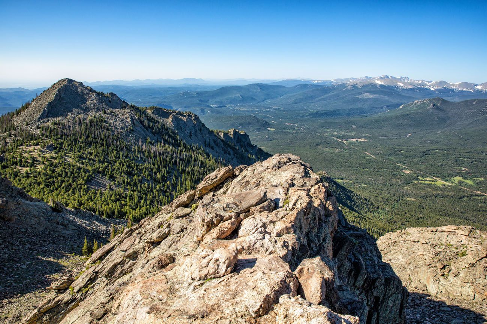
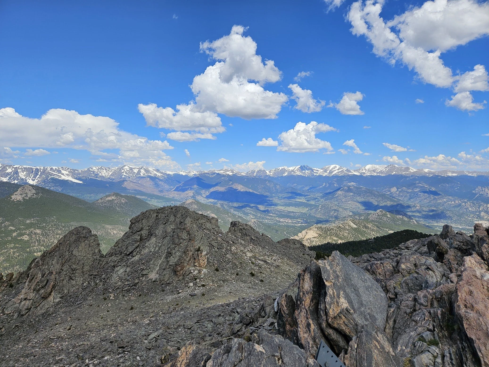

Gary's Hobby
Gary's favorite hike, Sky Pond, is in Rocky Mountain National Park (RMNP). The Sky Pond trail leads you to the Lake of Glass. The Sky Pond Trail hike features some of the best views in Rocky Mountain National Park and many opportunities for viewing wildlife including elk and marmots. This hike takes you past some of the most beautiful alpine lakes in RMNP including Timberline Lake, Lake of Glass, and Sky Pond itself.
The Sky Pond hike is approximately 8.6 miles each direction and has an elevation gain of approximately 1,765 feet.
Another one of Gary's other favorite hikes is Twin Sisters - near RMNP across from Long's Peak (the most famous 14er in Colorado).

Twin Sisters Peak is a steep adventure that takes you to the top of the Continental Divide! The route is exposed and rocky in its uppermost stretch, and there are a few sections of scrambling to get to the summit. At the summit, you'll see amazing panoramic views, including one of the finest views of Longs Peak in the park.

The Twin Sisters trail is 7.4 miles each direction with a 2,483 foot elevation gain.
 Long's Peak
Long's Peak Mt. Democrat, Mt. Cameron, and Mt. Lincoln (all in one day)
Mt. Democrat, Mt. Cameron, and Mt. Lincoln (all in one day)